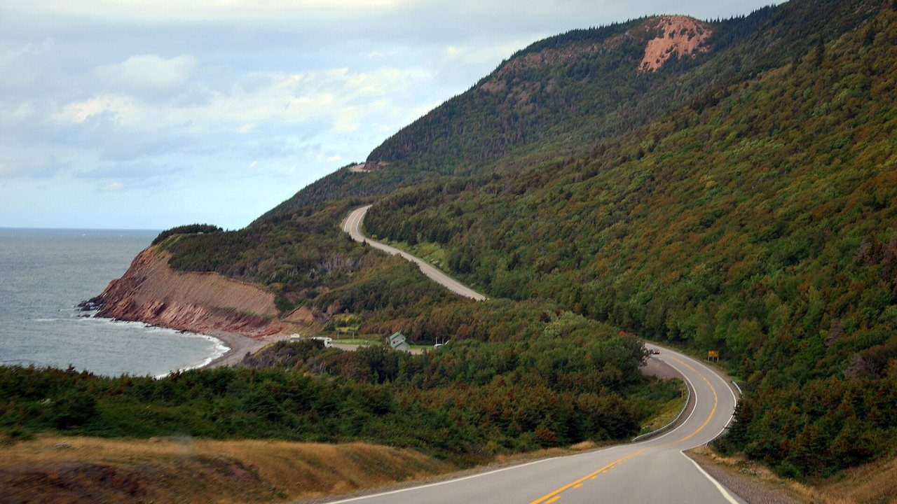

Race, Cabot Trail

Behind
Best +0:01
371W
Target 418 W-47 W
- Cadence
- 87rpm
- Heart
- 140bpm
- Speed
- 26.5km/h
Work3 of 7
7:42
Next: · 4:00 at level 13
+5.4%
294 m climbed
7.32 km
19
Resistance / 32
Solo races your best-time ghost: position reads Ahead or Behind, and solo alone gets a Pause button. Frozen at 18:18.